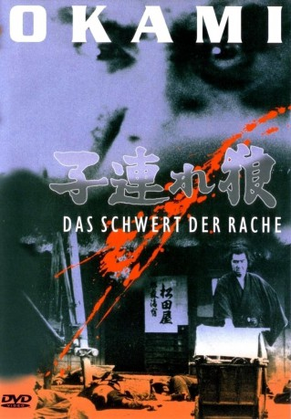

#10247 Okami 1 - Das Schwert der Rache *OmU*
Alternativ: Lone Wolf and Cub: Sword of Vengeance (Englischer Titel)
 
 IMDB-Wertung: 7.9 / 10
IMDB-Wertung: 7.9 / 10  Metascore: 0
Metascore: 0 
Japan im 17. Jahrhundert. Wenige Jahre nach den Klankriegen hat das Tokugawa-Shogunat das Land mit eiserner Hand unter sich vereint. Dies ist die Zeit, in der Legenden geboren wurden. Itto Ogami, der oberste Scharfrichter des Shoguns, erwartet die Häscher seines Herrn in weißer Trauertracht. Doch anstatt dem Befehl des Shoguns zum Selbstmord Folge zu leisten, tut er das Unfassbare: Er flieht mit seinem Sohn Daigoro um Rache zu nehmen am Klan der Yagyu, die seine Frau getötet und ihn um die Gunst des Shoguns gebracht haben. Ogami wird zu Okami, dem einsamen Wolf, und betritt mit seinem Sohn den blutigen Weg der Rache, auf dem ihn nur seine überlegene Schwertkunst am Leben hält.
Japanisch mit deutschen Untertiteln
Jahr: 1972
Dauer: 83 Minuten
FSK: 18
Land: Japan Studio: Toho CompanyTonspuren:
Untertitel: Deutsch,
Auflösung: 1080p (1920x784) Größe: 5601 MB
Genre: Action, Abenteuer
Regisseur: Kenji Misumi
Drehbuch: Kazuo Koike, Goseki Kojima, Kazuo Koike, Kazuo Koike, Goseki Kojima
Soundtrack: Eiken Sakurai, Hideaki Sakurai
Darsteller:
 Tomisaburô Wakayama als Ogami Itto
Tomisaburô Wakayama als Ogami Itto Akihiro Tomikawa als Daigoro
Akihiro Tomikawa als Daigoro- Fumio Watanabe als Bizennokami Yagyû
- Gô Katô als Ikiyu
- Tomoko Mayama als Osen (whore)
- Yûko Hama als
- Shigeru Tsuyuguchi als Kurando Yagyû
- Asao Uchida als Kenmotsu Sugito
- Taketoshi Naitô als Ichige
- Yoshi Katô als Danjô Tonami
- Keiko Fujita als Azami Ogami
- Isao Yamagata als
- Reiko Kasahara als Crazy Woman
- Ichirô Nakae als
- Michitarô Mizushima als
- Sayoko Katô als
- Kauji Sokiyamo als
- Daigo Kusano als
- Teruo Matsuyama als Monnosuke
- Shun'ya Wazaki als Horii
- Michimaro Kotabe als
- Saburô Date als
- Ryûtarô Gomi als
- Kyôichi Satô als
- Hiroshi Hasegawa als
- Kôji Fujiyama als
- Jun Takigawa als
- Hisao Hamita als Shigarami-tanba
- Yukio Horikita als
- Tokio Oki als Yagyu Retsudo
- Tadashi Iwata als
- Yûsaku Terashima als
- Manabu Morita als Omi
- Yûji Hamada als
- Hajime Etsukawa als
- Jun Fujikawa als
- Goro Kumon als
- Shôji Mori als
- Sumao Ishihara als
- Kôji Uehara als
- Tamotsu Fujiharu als
- Jun Soloni als
- Kanae Kobayashi als Bereaved woman's servant
- Shinji Nunome als
- Iwao Kasumi als
- Kazuo Mortuchi als
- Junichi Naitou als
- Kazuo Ôbayashi als
- Yoshumitsu Shimonura als
- Kazuyo Yanaka als
Datei: X:\FSK18-Eastern-Collections\Okami\Okami 1 - Das Schwert der Rache OmU (1972, FSK18, 1920x784).mkv seit 27.12.2018
Festplatte: FSK18
 Es gibt insgesamt 9 Filme in der Gruppe 'FSK18-Eastern-Collections\Okami'
Es gibt insgesamt 9 Filme in der Gruppe 'FSK18-Eastern-Collections\Okami'